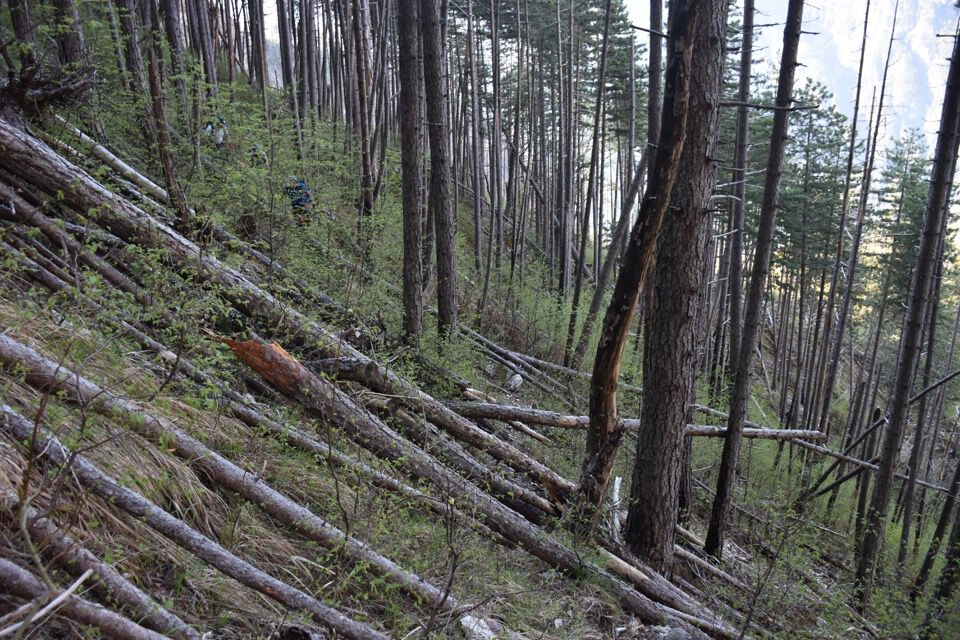
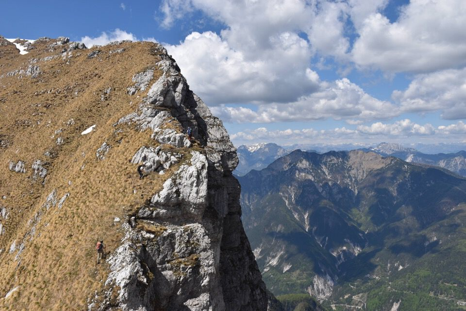

Lasciamo parlare V. Dougan («Il gruppo del Cimone», in Alpi Giulie agosto 1929).
Ciuc di Vallisetta m. 2074. Seconda ascensione turistica.
«Il Ciuc di Vallisetta occupa un posto importantissimo fra gli altri monti di questo gruppo, sia per l'altezza che per la sua struttura. La sua parete settentrionale, poco frastagliata, ma ripidissima, s'affaccia con orrido e profondo strapiombo sulla vallata di Sfonderât. Una fitta serie di cengie, appena accennate, ricoperte di erba e muschio, percorre tutta la parete, rendendo ogni passo malsicuro per la mollezza e cedevolezza del terreno. Da lungi esse appaiono - ciò non per tanto - molto seducenti.Ma se qualcuno volesse saggiare, una volta, questo terreno ancor vergine, badi egli bene di non fidarsi a queste apparenti possibilità di appigli, chè terminando questi corridoi in pareti levigate, egli verrebbe a trovarsi in una vera trappola. Anche il versante Sud-Ovest del Ciuc di Vallisetta conserva il suo carattere roccioso che è qui meno massiccio ed è solcato invece da verdi canaloni che s'affacciano su ripidi e strapiombanti abissi.»
«Il 9 novembre 1881 vi sali per primo Brazzà e soltanto nel 1911 per la seconda volta il dott. Kugy ed io da Patoc. Allorquando ci accingemmo di buon mattino all'ascensione, fra la lieve bruma che l'avvolgeva intravedemmo grossolanamente ancora la sua struttura. In seguito la nebbia si fece sempre più fitta sino a condensarsi in una grossa nube che si sciolse in pioggia torrenziale, non appena arrivati alla cima. Rassegnati al volere divino, che non c'era da trovar riparo alcuno dall'acqua abbondante, ci adagiammo — per l'usuale sosta — in vetta sul roseo cuscino di fiori. Il Ciuc di Vallisetta mi attirò ancora una volta con la speranza di poter ammirare da vicino la orrida parete del Cimone; ma come la volta precedente in vetta m'attendeva una nube grigia e cupa. Vi ero appena giunto che l'abbaglio del lampo saetta per l'aria e mentre mi accingevo ad abbandonare rapidamente questo monte inospitale, mi trovai in piena tempesta; i fulmini si susseguivano accompagnati da tuoni assordanti. Anche gli abitanti della vallata diffidano di questo monte. Talvolta durante il raccolto del fieno - mi raccontavano essi - (questa misera popolazione, in maggioranza donne, raccoglie il fieno necessario lassù, ad un'altezza di 1700 m.; in una giornata raccolgono sino a 50 kg. di fieno che deve venir portato a valle la sera per ripidi e vertiginosi sentieri), i richiami di maligni spiriti li distraggono dal lavoro. E nella notte odono dall'interno del monte vago rumoreggiare e martellare di fucina.»
È sempre una gioia partire all'alba da Patoc.
Cosa si può chiedere di più?
Un branco di camosci ci mostra una via alternativa per salire dal rio di Chiout Cali al costone Sud dello Jovet.
Non si salta sulle cenge! Spericolato!

Cjscjelát: ogni volta è come fosse la prima, visto da quaggiù, dal rio di Chiout Cali...
Sbrici dodici anni dopo l'incendio.
Bisogna essere un po' masochisti per prendere il Rop da qua; esserci passato due volte in discesa — la prima con Greta scendendo dallo Jovet Blanc e la seconda dopo la Semide — mi ha permesso di sapermici muovere seguendo bene o male il vecchio sentiero.
Il rio fra il Rop e Sbrici: non può essere che il «Rio della Scala»; qua i cartografi hanno fatto un gran pasticcio! Quello che in carta Tabacco è il rio della Scala deve essere per forza il rio Sbrici.
La mitica e leggendaria Scala del Rop: ma come è possibile?
Quando Antonio Armellini mi mostrò una foto della scala — sorretta da un monumentale muro a secco — non potevo credere ai miei occhi, sapendo in che razza di posto è e sopratutto dove porta.
Gradini intagliati a pònte e maciûl.
Un sogno realizzato per me camminare sulla mitica scala.
Arrivando dall'alto sembrerebbe impossibile scendere, dà l'impressione che ci sia un salto enorme.
Arriviamo sul costone del Rop: da qui avevamo altri piani in realtà, ma decidiamo di ripiegare sul Ciuc di Vallisetta.
C'è un sentierone, i camosci ci vanno eccome, ma ci vuol coraggio...
I rilassanti prati che seguono la parete gialla del Rop.
Non c'è posto più bello.

Iniziamo a traversare, sorpassando il clapusç dal Clocugnòn.
Val Raccolana, infinita bellezza.
Orride visioni verso il Cjavalòt.
Che emozione ad affacciarsi sull'abisso, oltre la forcelletta fra Mucul e Ciuc.
La mitologica forcje dal Fossâl.
Parete Ovest del Cimòn: impressionante, marmorea, da paura!
Grande gioia in cima al Mucul.
Sfonderât: ciò che si prova dal vero è altra cosa.
Altro che drone! Qui la cengia di collegamento fra la Bergerie di Sotgoliz e lo Sfonderât; la cengia è molto brutta a vedersi ma l'ho percorsa senza problemi.
Mitico e snello Jôf di Misdì.
Uno sguardo al rio dei Balins in versante Sud dello Jôf di Dogna: posto molto interessante!
I miei forti compagni.
E ora via sul Ciuc.
Fossâl: impressionante. Ho capito perché non si passa.
Il misterioso canalone Sud-Ovest del Ciuc di Vallisetta.
Una bellissima escursione.

Il rio Malimbérg s'inabissa verso il fondovalle.
Scendiamo per il sentiero «classico» di Sbrici, che però non è assolutamente la via migliore per Sbrici.
Guarda la cengia in centro foto, sul Cuel dai Sbrici...
...ecco il cjamoç che butta giù i sassi.
Sart, sempre bellissimo.
Non ne possiamo più: giuro che è l'ultima volta che passo per di qua.
È sempre emozionante passare per la Via Alta al ritorno e osservare dove si è passati.